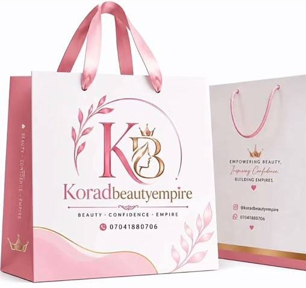

About Korad Beauty Empire
A skincare and bodycare brand from Lagos, with a range built around the concerns customers bring to us most.
We make face creams, body creams, soaps, serums, oils and scrubs, and we stock supplements for hair, skin and general wellness. The range covers dark spots, uneven tone, acne, redness, sunburn, stretch marks and signs of ageing.
For people who want a complete routine in one order, we put together full kits: Deluxe, Whitening, 7D, Caramel and Moroccan.
Beauty. Confidence. Empire.
That is the line on our logo and on every package we send out. We also run Korad Academy, a practical training for people who want to learn to formulate their own botanical skincare products.
Ordering and delivery
Orders are placed on WhatsApp. Build your list on this site, send it to us in one tap, and we confirm availability, the delivery fee and payment details with you. Delivery takes 24 to 48 hours within Lagos and 2 to 5 working days to the rest of Nigeria. Full payment is required before an order is processed.

Business details
- Registered name
- CAC registration no.
- Nature of business
- Manufacturing, production and sale of cosmetics
- Location
- Lagos State, Nigeria